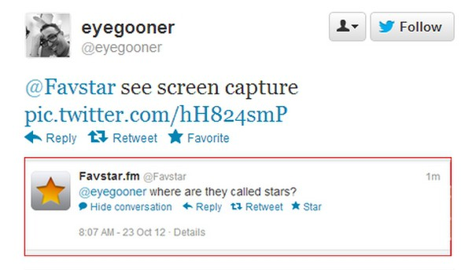
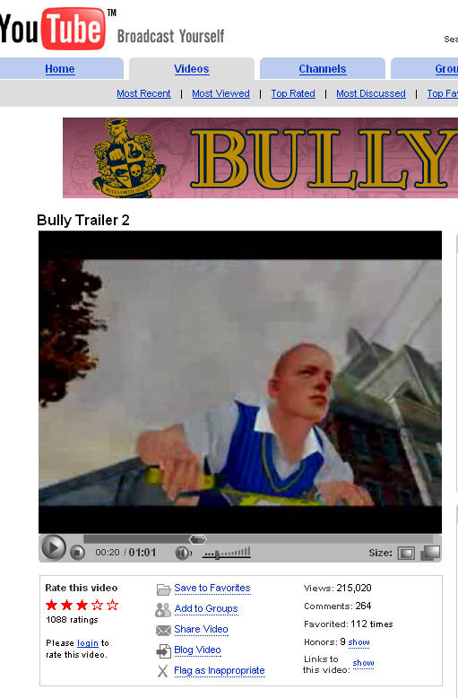
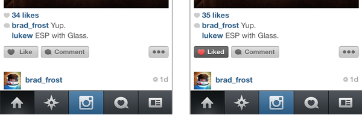
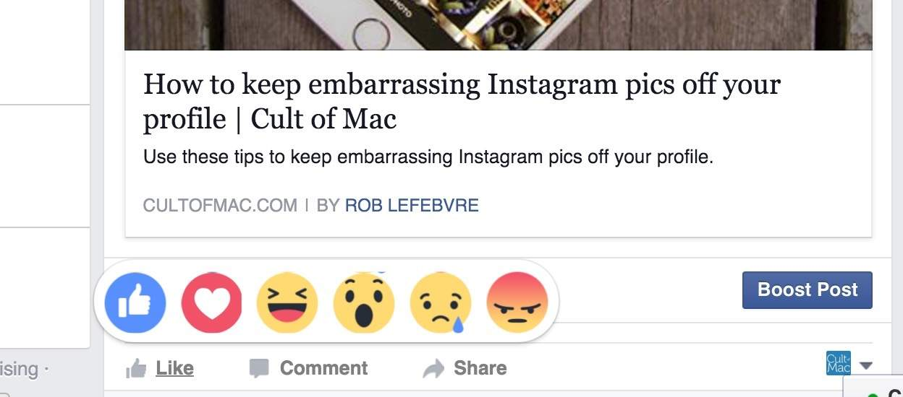

While Reddit didn't invent the like button their system of up and down votes has a correlation. Reddit debuted in 2005.

FriendFeed is credited as the first site to introduce a like button on their posts. This debuted On October 30, 2007.

Twitter followed suit quickly and introduced the favorite feature, this however was depicted with a star rather than only with words. This debuted in 2007 soon after FriendFeed

Tumblr was founded in February of 2007 and their like button follows perhaps the largest trend amongst websites of a heart that fills red when clicked.
On February 9th, 2009 Facebook introduced the iconic thumbs up like button that went through several iterations and is still around today. This serves as one of the most popular like button formats along with the heart.

Prior to March 2010 Youtube had a star rating system for videos.
In March of 2010 Youtube redesigned its rating button siting that most people did not use the middle values 2, 3, or 4, and instead introduced the like and dislike buttons and bar.

Instagram was launched in October of 2010 and included a like button featuring a heart, in later updates to the app the word dissapeared leaving the solitary heart that functions similarly to Tumblr.
Google rolled out the plus 1 button in June of 2011. I still don't understand what it means or does.

Vine was founded in 2012 and started with a relatively unique like button, a smiley face, later in Vine's life it switched over to the tried and true heart like button.
Yik Yak functions similarly to Reddit with an up and down vote system rather than traditional like buttons.

In November of 2015 Twitter went through a redesign and said goodbye to it's iconic star favorite button in favor of a red like button.


On February 24, 2016 Facebook rolled out reactions on posts. Now through 4 emojis, a like, and a thumbs up people could react to posts with slightly more complex emotions.

Similar to Facebooks reactions imessage introduced a reaction panel for texting on September 13, 2016.